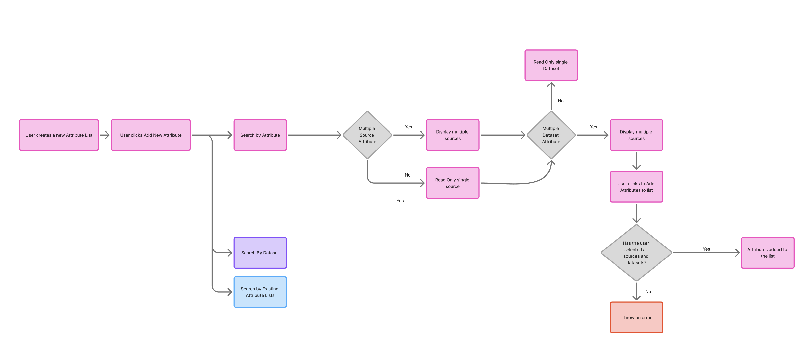

Attribute Selector
UX Design · Data tooling
How do you design a selection interface when the thing being selected can exist in dozens of forms across dozens of sources — and the wrong choice silently corrupts the data downstream?
My role
Sole designer. Responsible for problem framing, interaction design, accessibility, and handoff. Worked directly with engineering and product throughout.
Tools: Figma
Year: 2023
Context
This project was part of a data platform that allows users to build custom datasets — pulling specific data points from providers like GSMArena, TechRadar, and Apple Store. The team was small and cross-functional, working in a fast-paced product environment with a focus on data accuracy and analyst productivity.
Before analysts can build a dataset, they need to define which attributes to include: things like battery life, display resolution, or weight. The attribute selector is the tool that enables that. It was a greenfield feature — no existing pattern to follow — and the data model was genuinely complex: a single attribute like Battery Life can exist across multiple providers, and within each provider across multiple datasets. The design challenge was making that complexity navigable without hiding it, because the source of the data matters to the analyst's work.
The problem with the obvious solution
The instinctive approach — a flat table listing every attribute instance — would have produced an unusable interface. With 1,000 attributes averaging 4 instances each, users would face 4,000 rows, most of them near-identical duplicates. Searching for "battery life" would return four indistinguishable rows with no clear basis for choosing between them.
The problem wasn't just scale. It was that the flat model forced users to understand the data architecture before they could do their job. That's the wrong order. Users should be able to say what they want first, then decide where to get it from.
Every instance as its own row — 4,000 to scan:
| Attribute | Source | Dataset |
|---|---|---|
| Battery life | GSMArena | Flagship |
| Battery life | GSMArena | Budget |
| Battery life | TechRadar | Best 2024 |
| Battery cap. | GSMArena | Flagship |
| Resolution | Apple Store | iPhone |
| Resolution | GSMArena | Flagship |
| … 3,994 more rows | ||
1,000 attributes × 4 avg. instances = 4,000 rows
One row per attribute — source resolved after:
Same 1,000 attributes — 1,000 rows. Source resolved in step 2.
Scoping the work
Before designing anything, I mapped the full user journey to understand where attribute selection sits within the broader flow. This confirmed the scope — attribute lists and dataset creation were out of scope for this phase — and surfaced a key constraint: the attribute list built here would feed directly into downstream dataset creation. Any ambiguity in selection had real consequences for data quality, which meant error handling needed to be a first-class concern, not an afterthought.

Mapping the journey early confirmed scope and revealed the data quality stake downstream.Early exploration — what I discarded first
My first exploration used a standard checkbox pattern — the obvious choice for a selection interface. I built it out to the point where I could test the core interaction, and the problem became immediately clear: checkboxes communicate a binary state (selected or not), but the same attribute can legitimately be selected multiple times, once per source. The checkbox model had no way to represent that without flattening the list back to individual instances — which reintroduced the 4,000-row problem.
I also explored showing source and dataset inline on every row, so users could filter and select in a single step. This kept the list flat and made scanning harder, not easier. Neither approach solved the fundamental issue: the data model required a two-step interaction, and fighting that with a single-step UI just created a worse version of the original problem.
The solution
The core reframe was separating what from where. Attributes are compressed into single rows in the top panel. The user selects the attributes they want — adding them to a basket — and then resolves which source and dataset each one should come from. The two tasks have different cognitive weights and different space requirements, so they're separated into two distinct moments.
Key interaction decisions
Multi-instance: attribute stays until all instances are used
Users can add the same attribute more than once — once per available source. As long as instances remain, the attribute stays visible in the top panel. When all instances are in the basket, it disappears. This communicates the constraint (you can't add more than what's available) without any additional explanation.
Resizable panels
The interface has two competing jobs — finding attributes and resolving sources — each needing different amounts of space. Rather than imposing a fixed split, a draggable divider lets users shift emphasis depending on where they are in the task.
Bulk selection
Shift + click selects consecutive rows; Alt + click selects non-consecutive ones. Any add or remove action applies to the full selection — critical for power users clearing a batch of unresolved basket items at once.
Action buttons on the left
Convention places action buttons on the right. User testing surfaced a real friction point: on large monitors, analysts were reading an attribute name on the left and then dragging their cursor the full width of the screen to act on it. Shifting + and the delete action to the left cut that movement — a small decision that compounds significantly at the scale these analysts work at.
Error states and accessibility
Error handling was designed around two failure modes: users who try to proceed with unresolved attributes, and users who create source conflicts by switching providers on an attribute already in use elsewhere.
Unresolved attributes are flagged with a red highlight and a warning icon — never colour alone, which would fail WCAG 1.4.1. When a user clicks confirm with unresolved items remaining, the interface autoscrolls to the first problem row and focuses it. For source conflicts, the system detects them immediately and clears the affected field, prompting resolution rather than allowing silent errors to propagate downstream.
What this project required of me
Understanding a complex data model before designing anything
The relationship between attributes, providers, and datasets wasn't immediately obvious. I spent significant time with product and engineering mapping the data structure before I opened Figma. That investment made every subsequent design decision faster and more grounded — and it meant I could have informed conversations about edge cases rather than discovering them late.
Knowing when to break convention
The left-side button placement, the two-step model, the resizable panels — none of these follow standard patterns. Each required a clear rationale and the confidence to defend it. Being able to articulate why you broke a convention, and what you validated to support that decision, is what separates considered design from arbitrary design.
Designing for power users without excluding others
The target users are data analysts working daily at scale. The design needed to reward that expertise — bulk selection, keyboard-driven interaction, resizable panels — without creating an interface that newer users couldn't navigate. The progressive disclosure model (select first, resolve second) served both audiences.
Accessibility as a design constraint, not an afterthought
Building WCAG compliance into the error model from the start — dual signals, icon plus colour — meant it didn't require a retrofit. The follow-up work to move to cell-level errors is a continuation of that commitment, not a correction of an oversight.
Outcome
The feature shipped and was well received. Post-launch research confirmed the two-step model worked — users were able to build attribute lists without the cognitive overhead a flat table would have imposed. But the clearest signal of success came from within the product team itself.
The select-then-resolve pattern worked so well that it was adopted as the interaction model for other selection flows across the platform — becoming an internal design standard rather than a one-off solution.
Post-launch research also revealed a persistent space constraint: the modal format, even with resizable panels, wasn't giving power users enough room for complex selections. That finding directly informed the next iteration.
- Modal replaced with a drawer to maximise working space — validated by post-launch user research.
- Cell-level error states with icons to achieve full WCAG 1.4.1 compliance, moving beyond row-level highlighting.
- Support for selecting entire datasets or existing attribute lists as a starting point, reducing repetitive work for returning users.
- Conflict detection for pre-existing attribute lists: surfacing duplicates before a user confirms, rather than after.
What I'd do differently
I'd instrument the interaction earlier. The qualitative signal from user research was clear — the design was working — but I didn't have quantitative data on task completion time or error rates to benchmark against. That would have made the case for the drawer iteration faster and given the team a clearer baseline for measuring the next version.
I'd also have challenged the modal constraint sooner. The space problem was visible in early testing, and I treated it as something to optimise within rather than a constraint worth questioning. In hindsight, the drawer was the right container from day one — advocating for it earlier would have saved a design iteration post-launch.